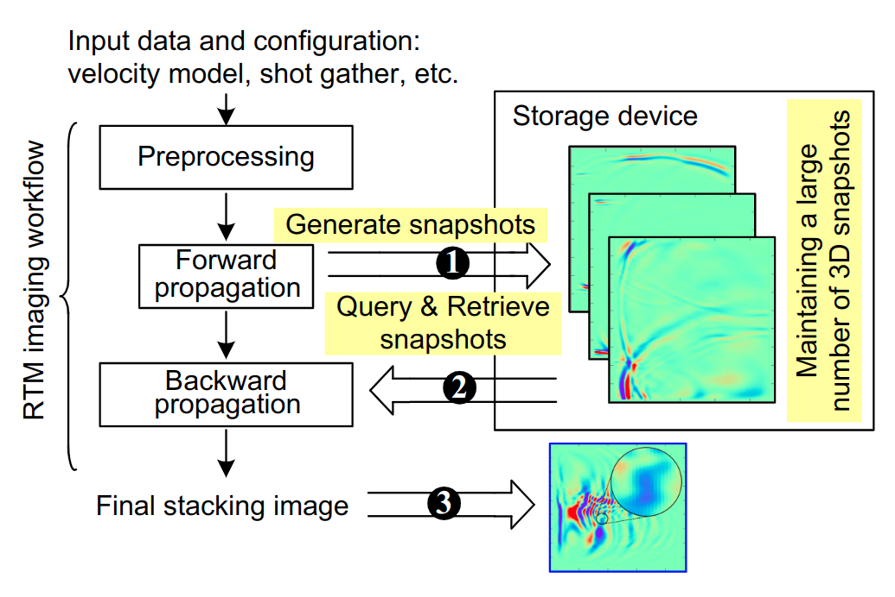
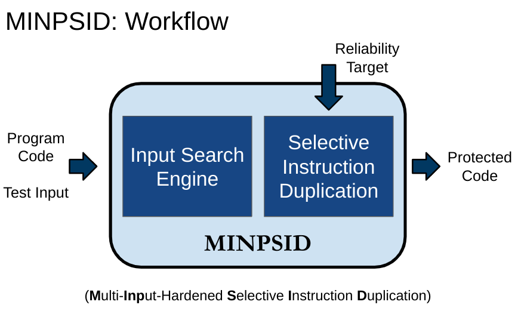
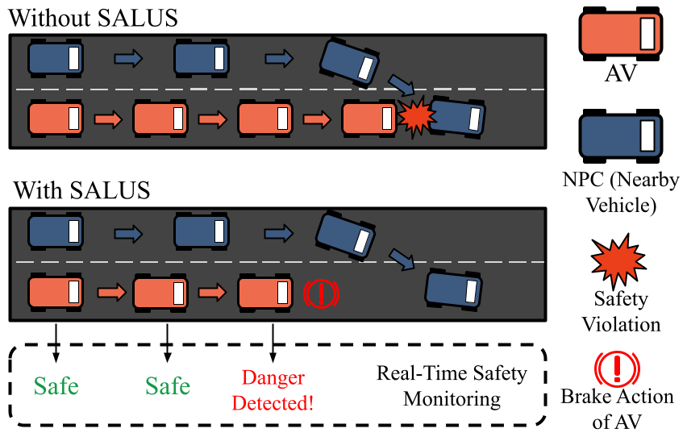
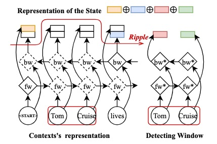
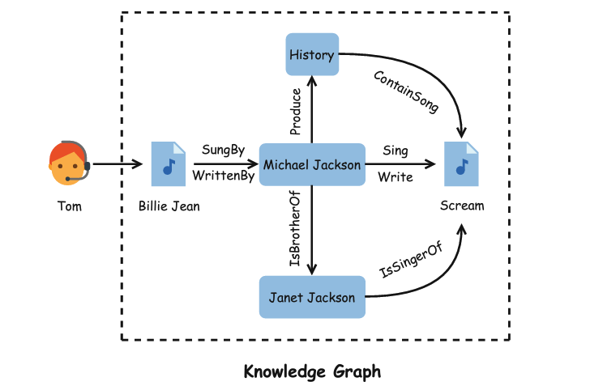
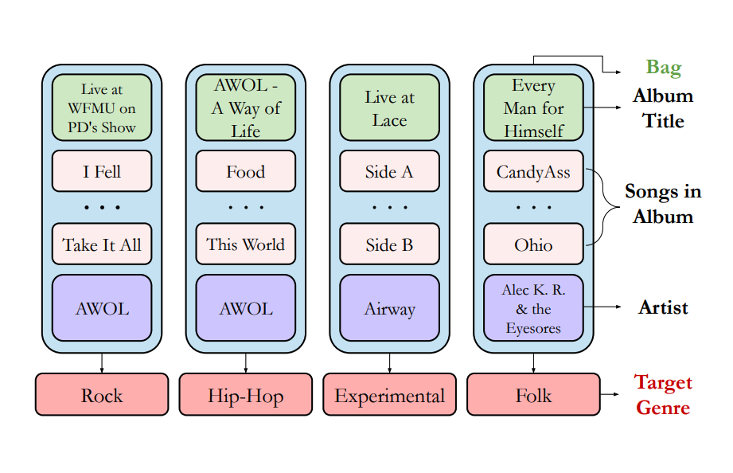
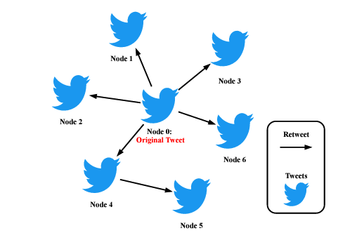

|
Research Showcase
This page contains all showcases of my past and ongoing research projects.
Research at Argonne National Laboratory
|
 |
Towards Improving Reverse Time Migration Performance by High-speed Lossy Compression
Seismic imaging is an exploration method for estimating the seismic characteristics of the earth's sub-surface for geologists and geophysicists.
Reverse time migration (RTM) is a critical method in seismic imaging analysis. It can produce huge volumes of data that need to be stored for later use during its execution.
The traditional solution transfers the vast amount of data to peripheral devices and loads them back to memory whenever needed, which may cause a substantial burden to I/O and storage space.
As such, an efficient data compressor turns out to be a very critical solution.
In order to get the best overall RTM analysis performance, we develop a novel hybrid lossy compression method (called HyZ), which is not only fairly fast in both compression and decompression but also has a good compression ratio with satisfactory reconstructed data quality for post hoc analysis.
Experiments show that HyZ not only significantly improves the overall performance for RTM by 6.29 to 6.60 times but also obtains fairly good qualities for both RTM single snapshots and the final stacking image.
This work is advised by Dr. Sheng Di at Argonne National Laboratory.
This work is collaborated with Saudi Aramco (Saudi Arabian Oil Group).
This work is accepted as a conference paper by IEEE/ACM International Symposium on Cluster Computing and the Grid (CCGrid) 2023.
|
Research at University of Iowa
|
 |
Mitigating Silent Data Corruptions in HPC Applications across Multiple Program Inputs
With the ever-shrinking size of transistors, silent data corruptions (SDCs) are becoming a common yet serious issue in HPC.
Selective instruction duplication (SID) is a widely used fault-tolerance technique that can obtain high SDC coverage with low performance overhead.
However, existing SID methods are confined to single program input in its assessment, assuming that error resilience of a program remains similar across inputs.
Nevertheless, we observe that the assumption cannot always hold, leading to a drastic loss in SDC coverage across different inputs, compromising HPC reliability.
We notice that the SDC coverage loss correlates with a small set of instructions - we call them incubative instructions, which reveal elusive error propagation characteristics across multiple inputs.
We propose MINPSID, an automated SID framework that automatically identifies and re-prioritizes incubative instructions in a given program to enhance SDC coverage.
Evaluation shows MINPSID can effectively mitigate the loss of SDC coverage across multiple inputs.
This work is advised by Dr. Guanpeng Li in IOWA-HPC Laboratory at the University of Iowa.
This work is accepted as a conference paper by International Conference for High Performance Computing, Networking, Storage and Analysis (SC) 2022.
This work is also accepted as a conference poster paper by ACM SIGPLAN Symposium on Principles and Practice of Parallel Programming (PPoPP) 2022.
This work is nominated as best paper finalist and best student paper finalist at SC’22.
|
|
 |
SALUS: A Novel Data-Driven Approach for Enabling Real-Time Safety of Autonomous Vehicles
This paper proposes SALUS, a data-driven real-time safety monitor, that detects and mitigates safety violations of an autonomous vehicle (AV).
The key insight is that traffic situations that lead to AV safety violations fall into patterns and can be identified by learning from the safety violations of the AV.
Our approach is to use machine learning (ML) techniques to model the traffic behaviors that result in safety violations in the AV, characterize their early symptoms for training a preemptive model, hence deploy and detect real-time safety violations before the actual crashes happen to the AV.
In order to train our ML model, we leverage a pipeline of fuzzing techniques to tailor AV-specific safety violation symptoms and generate the training data via data argumentation techniques.
Our evaluation demonstrates our proposed technique is effective in reducing over 97.2% of safety violations in industry-level autonomous driving systems.
This work is advised by Dr. Guanpeng Li and collaborated with Bohan Zhang in IOWA-HPC Laboratory at the University of Iowa.
This work is accepted as a conference paper by IEEE International Conference on Software Quality, Reliability, and Security (QRS) 2022.
This work is also accepted as a conference workshop paper by RSDA at IEEE International Symposium on Software Reliability Engineering (ISSRE) 2022
|
Research at Huazhong University of Science and Technology
|
 |
Dynamic Entity-based Named Entity Recognition Under Unconstrained Tagging Schemes
This work proposes a dynamic entity-based NER approach under unconstrained tagging schemes.
First, this work reorganizes widely used tagging schemes and proposes two novel unconstrained schemes.
Besides, two entity-based neural architectures are also presented that recognize entities at the same time that the sentence is dynamically segmented.
The dynamic mechanism can ensure that the entity-level features are included in the NER system, which is helpful for correctly recognizing entities.
Except for word embeddings pretrained from unlabeled corpora, no external language-specific knowledge or other resources such as gazetteers are used.
Experiments with English, German, Dutch and Spanish datasets show that the proposed methods can achieve promising performance with different languages.
This work is conducted at Cluster and Grid Computing Laboratory (CGCL) at HUST.
This work is advised by Dr. Feng Zhao and Xiangyu Gui.
This work is accepted as a journal article by IEEE Transactions on Big Data.
|
|
 |
Path-enhanced Explainable Recommendation with Knowledge Graphs
This work incorporates knowledge graph to boost recommendation, and proposes a model named Path-enhanced Recurrent Network (PeRN).
Specifically, PeRN integrates a recurrent neural network encoder with a metapath-based entropy encoder to increase explainability and accuracy and reduce cold-start costs.
The recurrent network encoder has a strong ability to represent sequential path semantics in a knowledge graph, while the entropy encoder, as an efficient statistical analysis tool, leverages metapath information to differentiate paths in a single user-item interaction.
A path extraction algorithm with a bidirectional scheme is also proposed to make PeRN more feasible.
The experimental results on two real-world datasets demonstrate our significant improvements with reasonable explanations, promising accuracy, and a minimal amount of prior knowledge compared with several state-of-the-art baselines.
This work is conducted at Cluster and Grid Computing Laboratory (CGCL) at HUST.
This work is advised by Dr. Feng Zhao.
This work is accepted as a journal article by World Wide Web.
|
|
 |
MATT: A Multiple-instance Attention Mechanism for Long-tail Music Genre Classification
This work targets to improve long-tail classification in Music Information Retrieval (MIR).
Inspired by the success of introducing Multi-instance Learning (MIL) from classification tasks in NLP, this work designs MIL attention mechanism to boost the performance for identifying tail classes.
Specifically, this work first constructs the bag-level datasets by generating the album-artist pair bags.
Then, this work leverages neural networks to encode the music audio segments.
Based on these, the neural network-based models could recognize the most informative genre to match the given music segment.
Comprehensive experimental results on a large-scale music genre benchmark dataset with long-tail distribution demonstrates the proposed attention mechanism significantly outperforms other state-of-the-art baselines.
This work is conducted at School of Computer Science and Technology at HUST.
This work is collaborated with Xiaokai Liu.
This work is accepted as a conference paper by International Conference on Systems, Man, and Cybernetics (SMC) 2022.
|
|
 |
Rumor Detection on Social Media with Out-In-Degree Graph Convolutional Networks
This work adopts graph convolutional networks to enhance rumor detection.
Rumor detection is a hot research topic where graph neural networks are widely utilized.
Though previous works show promising results, they do not dig into the data imblance issue in existing rumor detection datasets.
Specifically, it incorporates Katz centrality into spectral-domain graph convolution and proposes a model named Out-In-Degree Graph Convolutional Networks (OID-GCN).
Besides enhancing accuracy, Katz centrality can efficiently capture the position information of nodes, while the rest structure of OID-GCN shows a superb ability in dealing with imbalanced data.
Comprehensive experimental results on two real-world datasets Twitter-15 and Twitter-16 demonstrate our OID-GCN outperforms several existing methods.
This work is conducted at School of Computer Science and Technology at HUST.
This work is collaborated with Shihui Song.
This work is accepted as a conference paper by International Conference on Systems, Man, and Cybernetics (SMC) 2021.
|
|
{kind=link}